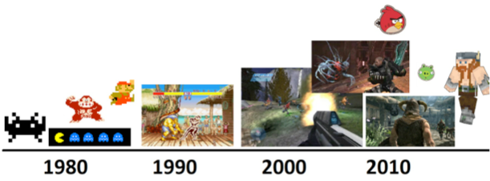
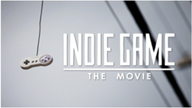

Fan Expo talk recap
Thursday, August 30, 2012
It’s been several weeks since my last post - I’ve been on vacation, then I had to teach the Bingeman’s Game Camp, and then speak at Fan Expo twice.....
Regardless, this post is about one of the two talks I did at Fan Expo with Bryan Griffiths (one of our game development faculty and a constantly active game developer).
Firstly, for those who aren’t familiar with Fan Expo, it is the largest Comic/Gaming/Anime/Horror festival in Canada - it is held each year at the Toronto Metro Convention Centre, and draws more than 80,000 people!
Our college hosts a large booth each year in the gaming section (since we teach video game development) and we also give several panels/talks related to the video game industry. It is an important event for us because nearly all of our current video game developer students (and future ones) attend this event because they are nerds like us ;-)
The first presentation we gave was about how to get into the video game industry - it was extremely well received and both Bryan and I had a great deal of fun doing it (there was some good humor in there too ;-)
The second presentation we gave was about how independents and free thinkers are changing the industry and what it means for 2013. This presentation was also extremely well received! In fact, we could have used another hour easily - the audience was very interactive and we had a ton of fun with them (many of them were game developers too).
I’m going to highlight some parts of our second presentation in this post as I think they could be useful for others.
Looking back at game history is important in attempting to predict the future, and I usually find that everything relates well to a simple look back on the types of games available.

Early games relied on imagination (remember those colorful arcade cabinets from Atari?) since graphics were poor (blocky 8-bit), and there was usually only one room/world. Instead, those early games relied on simple-but-great gameplay.
Over time, the graphics got better, and games had more depth (Day of the Tentacle, Halo, etc.) Now the biggest game titles (called AAA titles) have very realistic graphics and smooth physics.
You can even see this trend in the game consoles released over time – in the 1980s, arcades were more popular because they had dedicated hardware and the version of Pac-man you could get in the arcade was far better than that from an Atari 2600 (which didn’t even have a framebuffer to draw graphics!). By the mid 1990s, Sega, Sony, and Nintendo started releasing very powerful home console hardware that could do graphics as good as arcades (the N64 had graphics designed by SGI), so arcades fell out of style in North America and home console gaming became a popular social pastime.
Consoles and PCs are great today for graphical games, but we also have a plethora of mobile/web games, which can’t focus as much on graphics, so they have to focus on simple-yet-fun gameplay (retro is in style right now as a result)……are we returning to gameplay focus? Think Minecraft....
This past week, I taught a ton of 10 to 13-year-olds in a game camp hosted by Bingemans in Kitchener – all of them were Minecraft freaks! When I asked them if they minded the graphics, they said that the graphics don’t matter - it’s just an awesome game.
After all, kids these days have their choice of many different games on different platforms (console/PC/mobile/web) and of different genres and prices. Minecraft costs $26.95 and gives kids long hours of gameplay, which is why it caught on with parents – communities are built, hundreds of YouTube fan videos are created (e.g. Screw the Nether, a parody of Moves like Jagger), and other audiences go nuts over it. Ditto for so many other independent (or indie) games. Indie games don’t have a AAA publisher backing them.
This leads us to several different predictions for 2013 and beyond:
Prediction #1: Retail game sales will nose-dive.....
Retail sales of video games are at their lowest level since 2006. 2008 was the height of video game retail sales (just under $12 billion US), and 2011 was just over $9 billion.
Much of this is due to the rise of digital distribution. In 2009, physical distribution was 80% and digital distribution was 20%. By 2011, physical was only 69% and digital was 31%. And it looks as if this digital trend is accelerating this year too!
Console gaming is still the most common, but closely followed by PC gaming and smartphone gaming. PC gaming has seen a surge in digital distribution (e.g. Steam), and mobile (smartphone/tablet) gaming almost exclusively uses digital distribution. One girl in the audience (who worked for EB Games) said that she’d buy a copy of the same game she had in her store from Steam simply because she could get it now (more convenient).
Prediction #2: We’ll see more female game devs.....
In 2011, the US had over 80 million people who played games on their smartphones. Already in 2012, there is over 100 million, and over half of them are women, and the numbers aren’t that far off for PC and console gaming too!
But less than 1% of game developers are women, which means you probably have some big Russian guy working on dress-up games for girls. The best games have game developers who are part of the target audience of the game - I think this surge in female games will lead to more women becoming interested in game development and the male-female game developer ratio will even out.
This one had very mixed reactions within the audience (many of whom are game developers). Half agreed 100%, whereas others didn’t think that women will enter the game development industry in large numbers (some of the female game developers in the audience even noted that they’d rather work on violent games rather than dress-up games ;-)
Plus, female interest and enrollment in any computer science field is at an all time low - it used to be about 50% female in the 1980s, but has been dropping steadily since, and today is less than 10% across the board. Girls just aren’t socialized to enter tech fields anymore, even though there are plenty of initiatives geared to encourage high school girls to enter tech-related fields (those initiatives just aren’t working).
Prediction #3: Independent game developers will affect more change in the industry than AAA game developers.....
Rise of digital distribution means that you don’t need to have a big publisher with retail chain connections and large costs to develop a game. This has almost single-handedly allowed indie developers to create games.

For a good example of this, watch the movie Indie Game: The Movie (2012), where they detail what it’s like to be an independent game developer by examining the creators of Super Meat Boy, Fez, and Braid.
There are also far more avenues to get your game in the hands of consumers that weren’t available in the past without a AAA publisher behind you (e.g. Apple App Store, Google Play Store, Steam, etc.).
Better yet, there are a ton of government incentives for interactive media and the indie game industry (http://www.omdc.on.ca). This is even happening at local levels too - London’s mayor announced the Digital Media Centre of Excellence in partnership with Digital Extremes to foster digital media innovation within the city. And other indie game incubators are popping up everywhere (Ryerson DMZ, etc.).
On a broader level, we have a smorgasbord of game genres and choices – those that are the most popular (and non-cost-prohibitive) take off! Think Minecraft!

What makes popular games today? It’s not just graphics. For the past 5 years, you could pump out a game with good graphics and anyone would buy it. People are starting to choose games where graphics don’t matter (especially with the rise of mobile and Web gaming) – they want fun and mental stimulation instead. Kids are socialized to look for this too.
The big graphical reality games will always be there, but I think we are close to a saturation point – games with good graphics are starting to get slammed in reviews if they don’t have enough depth or varied/meaningful gameplay. This will put pressure on the AAA publishers.
Plus, there is the coolness of retro 8-bit – abstraction allows us to use our imagination more in gaming – sometimes realistic graphics aren’t the best:
It reminds me of one time where I saw some children talking about whether they liked radio or television, and I asked one little boy why he preferred radio, and he said, "Because the pictures are so much better.“
-Gary Gygax
So.........what does this mean for the industry?
On a fundamental level, more $$ for developers, more indie game shops, and more choice for gamers of all ages.
It also means refocusing of game studios - larger game studios won’t just focus on AAA games with good graphics – we’ll see mixing, or divisions focusing on a single type/genre of game (AAA, Indie, Mobile, etc.).
Beyond this, it also means we’ll likely see much more gamification within companies because games will gain more mainstream importance in our everyday lives. Some of our instructors even use gamification within the classroom by turning the class into a game (you get experience points if you show up on time, answer the questions at the end of the day, etc.). If you want to learn more about gamification, read Jane McGonigal’s book Reality is Broken (2011).
We actually ran out of time during our presentation because our audience was so interactive and awesome! We could have easily used another hour. Regardless, I think the session was fun, informative, and thought-provoking from the impressions we got from talking with audience members in the lobby after the presentation.
Sources for the stats in this post: Entertainment Software Association, NPD Group, Wired.com, EMarketer